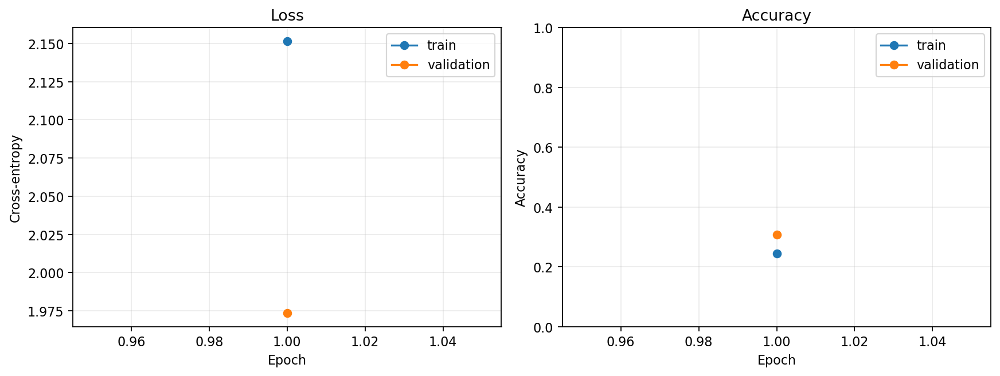
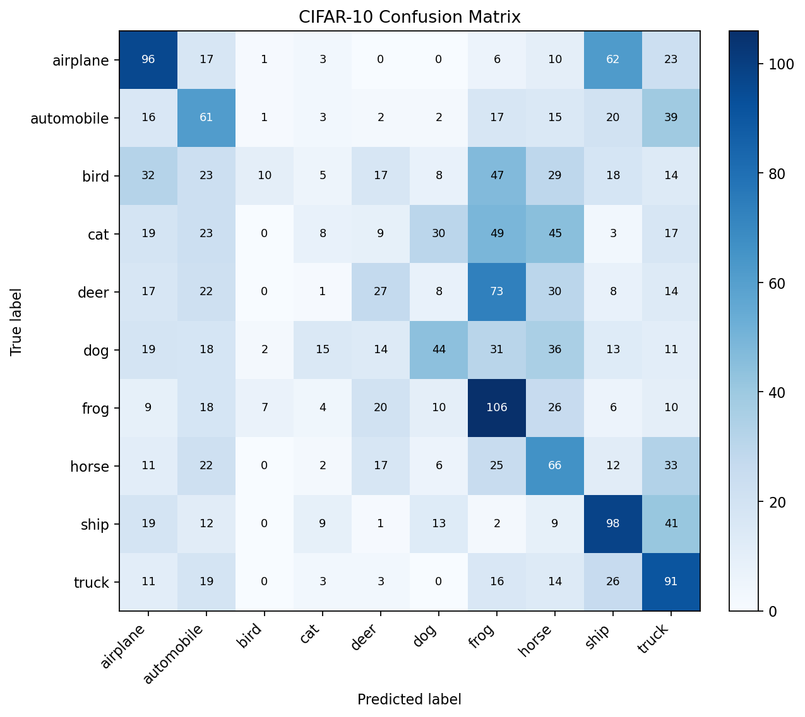
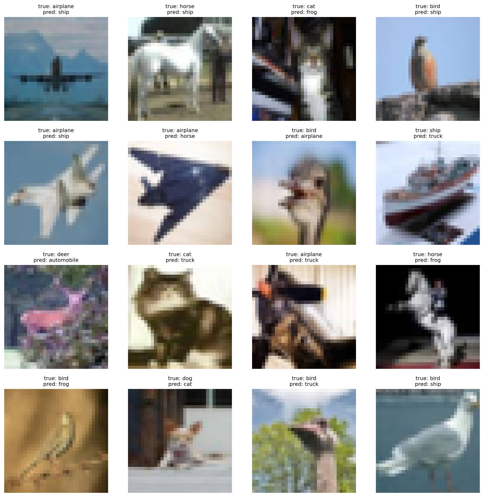

Practice · CIFAR-10
每一步都有输入、输出和通过标准。
这页不承诺“照抄就有某个准确率”。它教你把前三讲连成可复现流程，并区分代码流验证、模型选择与最终测试。
先对照本页代码与三讲数学约定
理论网络把单个样本写成列向量；PyTorch 把 batch 放在行上：输入为 B×D，Linear 的权重为 H×D，前向实际是 XWᵀ+b。两种约定表示同一个模型，梯度与各自参数形状保持一致。
CrossEntropyLoss 接收 logits，默认对 B 个样本取平均：\(\bar L=-B^{-1}\sum_n\log p_{n,t_n}\)。对一个样本的 logit 导数是 p−t，批量参数梯度再平均。十类均匀概率的基准损失为 \(-\log(1/10)=\log 10\approx2.302585\)；它是均匀预测的基准，不是每个随机初始化都必然给出的值。
本实践采用 SGD，weight_decay 向更新所用梯度加入 λw；带 momentum 时这项也进入动量缓冲。若独立处理偏置，需建立不衰减的参数组。当前脚本默认 weight_decay=0；切换到 Adam/AdamW 时应核对其规则，不能直接沿用普通 SGD 的收缩解释。
推导算例的独立核对无需下载数据：conda run -n pytorch python downloads/rewrite_reference_checks.py。它检查三点最小二乘、Gaussian 后验与岭解、稳定交叉熵、C4 的完整反向传播和中心差分；训练练习仍为可选实践。
P0 · Reproducibility
环境、设备与随机种子
↗ 第三讲：随机梯度与训练路径目的：先确认依赖与设备，再固定可控随机源。种子改善可复现性，但不同硬件和算子仍可能有细微差异。
import random, numpy as np, torch
seed = 42
random.seed(seed); np.random.seed(seed)
torch.manual_seed(seed); torch.cuda.manual_seed_all(seed)
device = torch.device("cuda" if torch.cuda.is_available() else "cpu")常见错：把 CUDA 可用误认为每个张量都已在 GPU。
P1 · See the data
读取 CIFAR-10，并先看真实样本
↗ 第二讲：输入、标签与类别目的：确认 10 类标签、图像内容和数据目录。CIFAR-10 图像是 32×32 RGB。
from torchvision.datasets import CIFAR10
train_raw = CIFAR10("data", train=True, download=True)
test_raw = CIFAR10("data", train=False, download=True)
image, label = train_raw[0]常见错：下载失败时不先检查网络、磁盘和目录权限。
P2 · Representation
把图像变成 CHW 张量，再使用固定教学归一化
↗ 第一讲：规范化与数据泄漏目的：转换为 C × H × W 浮点张量。本课程为保持 quick run 可复现，固定使用对称教学归一化；若改用数据统计量，只能由训练折计算。
transform = transforms.Compose([
transforms.ToTensor(),
transforms.Normalize((0.5, 0.5, 0.5),
(0.5, 0.5, 0.5)),
])常见错：把 HWC 当 CHW，或让验证/测试数据参与统计量计算。
P3 · Honest selection
确定性划分训练集与验证集
↗ 第一讲：训练、验证、测试分工目的：验证集只用于超参数和早停，测试集保持封存。
g = torch.Generator().manual_seed(42)
train_set, val_set = torch.utils.data.random_split(
full_train_set, [45_000, 5_000], generator=g)常见错：每个候选重新随机划分。
P4 · Mini-batches
DataLoader 决定一次更新看多少样本
↗ 第三讲：mini-batch 梯度目的：训练集打乱，验证与测试不打乱；Windows 排错从 num_workers=0 开始。
train_loader = DataLoader(train_set, batch_size=128,
shuffle=True, num_workers=0)
images, labels = next(iter(train_loader))常见错：把一个 batch 当一个 epoch。
P5 · Baseline first
先训练线性 Softmax 基线
↗ 第二讲：logits 与多类损失目的：先用简单模型检查数据、标签和训练循环。
baseline = torch.nn.Sequential(
torch.nn.Flatten(),
torch.nn.Linear(3*32*32, 10),
).to(device)常见错：末尾加 Softmax 后又传给 CrossEntropyLoss。
P6 · Add nonlinearity
实现 3072→512→256→10 的 MLP
↗ 第三讲：前向传播与维度目的：只增加足够的非线性表达能力，并逐层核对维度。
model = torch.nn.Sequential(
torch.nn.Flatten(),
torch.nn.Linear(3072,512), torch.nn.ReLU(),
torch.nn.Linear(512,256), torch.nn.ReLU(),
torch.nn.Linear(256,10),
).to(device)常见错：忽略 RGB 三通道。
P7 · Objective and update
交叉熵接 logits，SGD 接参数
↗ 第二讲：交叉熵来自负对数似然目的：把概率模型与优化步骤正确对接。标签使用类别索引 LongTensor。
criterion = torch.nn.CrossEntropyLoss()
optimizer = torch.optim.SGD(model.parameters(), lr=0.01,
momentum=0.9, weight_decay=0.0)常见错：重复 softmax 或标签 dtype 错。
P8 · One epoch
训练循环的顺序不能乱
↗ 第三讲：前向、反向、更新目的：每批完成清梯度、前向、损失、反向与更新。
model.train()
for images, labels in train_loader:
optimizer.zero_grad(set_to_none=True)
loss = criterion(model(images.to(device)), labels.to(device))
loss.backward(); optimizer.step()常见错：忘记清梯度。
P9 · Evaluate without learning
评估时关闭训练行为和梯度记录
↗ 第一讲：验证集回答什么目的：用 eval() 与 inference_mode() 得到样本加权指标。
model.eval()
with torch.inference_mode():
logits = model(images.to(device))
pred = logits.argmax(dim=1).cpu()常见错：平均每批准确率，让最后小批权重过大。
P10 · Smoke test
快速模式只验证代码流，不代表最终性能
↗ 第三讲：小规模独立检查目的：用确定性子集和 1 epoch 验证下载、设备、维度、反向、保存和绘图。
quick_mode = True
train_limit, val_limit, test_limit = 8000, 2000, 2000
epochs = 1P11 · Full training
记录每轮历史，并按验证指标保留最佳状态
↗ 第一讲：训练误差与泛化分离目的：每轮记录训练损失、验证损失与准确率；最佳 epoch 只由验证集决定。
for epoch in range(epochs):
train_metrics = train_one_epoch(...)
val_metrics = evaluate(...)
if val_metrics["accuracy"] > best_val:
best_state = copy.deepcopy(model.state_dict())常见错：自动把最后一轮当最佳轮。
P12 · Model selection
只用验证集搜索超参数
↗ 第一讲：复杂度旋钮与验证目的：比较隐藏层宽度、学习率、batch size 和 weight decay；保持同一划分与预算。
trials = [
{"hidden":(512,256), "lr":.01, "batch":128, "wd":0.0},
{"hidden":(512,256), "lr":.03, "batch":128, "wd":0.0},
{"hidden":(512,256), "lr":.01, "batch":64, "wd":1e-4},
]常见错：看测试结果后再调配置。
P13 · Freeze and test once
重训最终配置，测试集只使用一次
↗ 第一讲：测试集的最后职责目的：冻结超参数后重训，加载最佳检查点，再计算最终测试指标。
checkpoint = {
"model_state": model.state_dict(),
"class_names": class_names,
"normalization": normalization, "config": config_dict,
}
torch.save(checkpoint, "best_mlp.pt")常见错：只保存权重，不保存类名与预处理。
P14 · Diagnose, do not decorate
曲线、混淆矩阵和错误样本回答不同问题
↗ 第二讲：错误信号与类别偏差目的：曲线看收敛与过拟合，混淆矩阵看类别对，错误样本看数据或模型模式。
plot_history(history, "history.png")
plot_confusion_matrix(cm, class_names, "confusion_matrix.png")
plot_misclassified_examples(examples, "misclassified_examples.png")


常见错：只放图不解释。
P15 · Audit trail
报告必须让别人知道你做了什么、没做什么
↗ 第三讲：验证结论的边界目的：报告数据划分、预处理、结构、损失、优化器、随机种子、预算、选择规则、最终指标和限制。
报告最小清单
1. 环境与随机种子
2. 数据划分与预处理
3. 模型结构和参数量
4. 损失、优化器、训练预算
5. 验证选择规则
6. 一次最终测试及诊断图
7. 未验证事项与下一步常见错：把 quick run 写成完整实验。